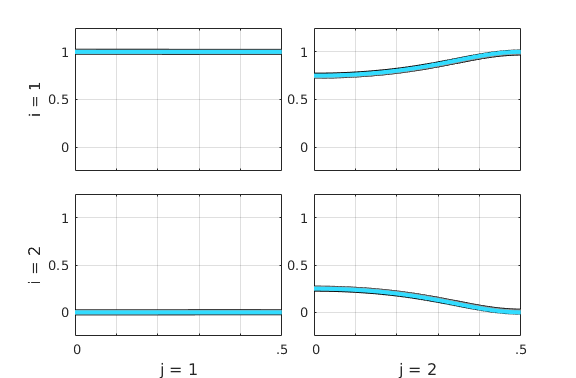
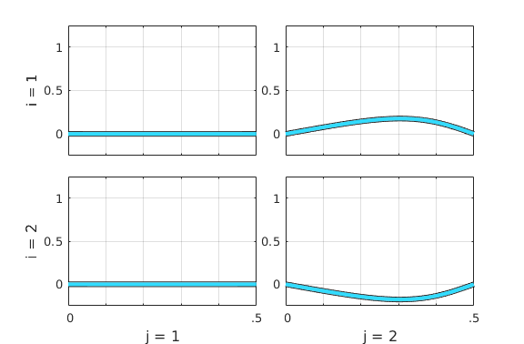
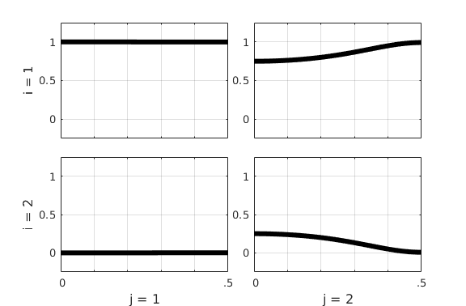
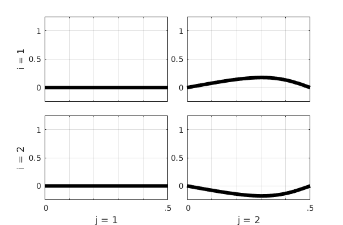
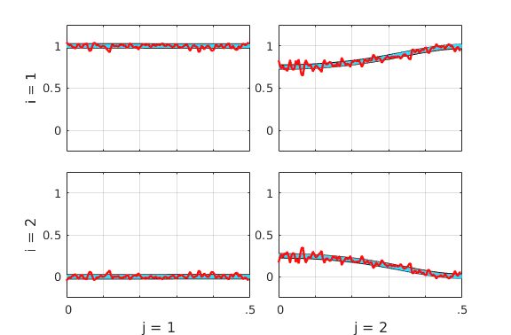
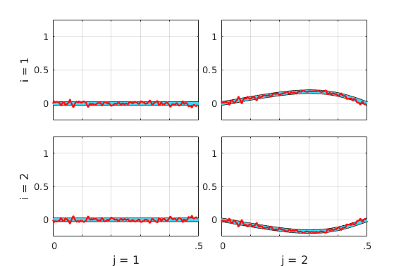
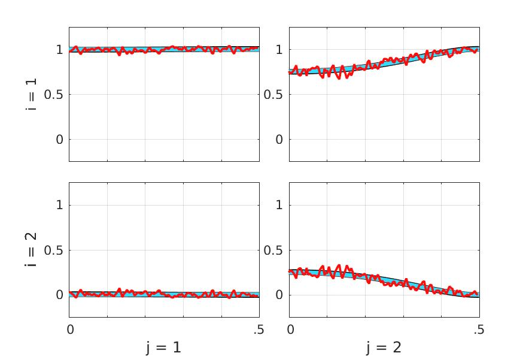
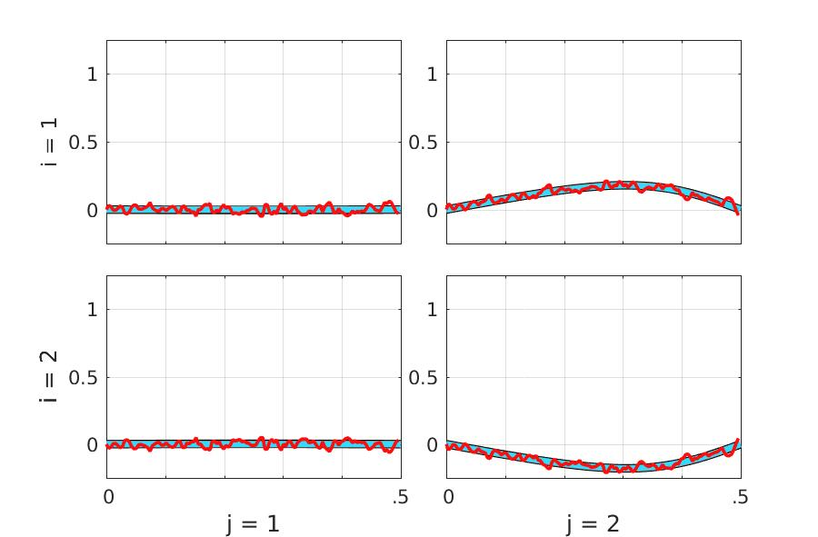

Example 1 -- Vector Moving Average Model (VMA)
This is part of supplemental material accompanying the article of the Special Issue of Frontiers in Network Physiology on Research Topic in *Network Physiology, Insights in Information Theory: 2021* edited by Luca Faes:
Baccala LA, Sameshima K (2022). Partial Directed Coherence and the Vector
Autoregressive Modelling Myth and a Caveat. Front. Netw. Physiol. 2:845327
<https://doi.org/10.3389/fnetp.2022.845327>This script should run on any recent version of MATLAB and also in most recent versions of Octave. It was partially tested under Windows, Mac OSX and Linux environments with MATLAB version 7.0 and higher, and with Octave versions 6.3.0 and 6.4.0 under Linux Ubuntu 18.04. See Readme.pdf file for license terms.
See also EXAMPLE2, EXAMPLE3, EXAMPLE4 | Example2.html | Example3.html | Example4.html |
Contents
- Starting Example 1 script
- Choosing Wilson factorization routine
- Set parameters for VMA model
- Line width & color space for plotting four measures
- Set figures size for 2-by-2 subplot layout
- Initialize figures with size and position to handle different screen sizes
- Plotting sequence: VMA(black), VAR(gray), Theo(blue), WN(red)
- Plot 1 : Theoretical (blue lines)
- Plot 2 : VMA (black lines)
- Plot 3 : Standard VAR (gray lines)
- Plot 4 : WN -- Nonparametric Wilson factorization estimate (red lines)
- Figure 1A - total Partial Directed Coherence real component
- Figure 1B - total Partial Directed Coherence imaginary component
- Position the figure windows on screen for better visualization
- To export the figures, uncomment following four lines, then rerun this script.
- Clear local variables and parameters preparing for next Example's script.
Starting Example 1 script
Here all figures are closed and all variables are removed from the workspace.
clear; close all disp('===========================') disp(' Example 1') if isOctave() warning off end
===========================
Example 1
Choosing Wilson factorization routine
flgWilson = 1; % 1: Awilson.m (in-house); 2: specfactorization_wilson.m by [1]. % % [1] Henderson JA, Dhamala M, and Robinson PA (2021). Brain % dynamics and structure-function relationships via spectral % factorization and the transfer function. NeuroImage, % 235:117989.
Set parameters for VMA model
pf = [1 1; 1 5]; A = []; B = zeros(2,2,1); B(:,:,1) = [0 1; 0 0]; BB(:,:,1) = eye(2); BB(:,:,2) = B; % Data sample size and frequency scale resolution Ndata = 1024*4*4; NFreqs = 1024; % Data generation [y,seed_out,epsilon0] = datagenAB(A,B,pf,Ndata,1); % Notice that A=[]
This is a model with A = [].
Line width & color space for plotting four measures
% Line width in point lWidth = [3.003 4.507 3.507 1.752]; % Theo VMA VAR WN -- measure % blue black gray red -- line color % Line color in RGB color model C = [0.1961 0.8627 1.0000; % blue Theoretical 0 0 0; % black VMA 0.6 0.6 0.6; % gray VAR 1.0000 0.0498 0.0498]; % red WN Wilson estimate
Set figures size for 2-by-2 subplot layout
% Screen dimension in pixel. set(0,'units','pixels'); sz = get(0,'ScreenSize'); % Ad hoc checking for the presence of multiple monitors in Octave. khmon = round(sz(3)/1920); % Guessed # of horizontally tiled screens if khmon < 1, khmon = 1; end kvmon = round(sz(4)/1000); % Guessed # of stacked screens if kvmon < 1, kvmon = 1; end % Scale figure size on screen according to the monitor resolution % This has been implemented as 'tilefigs.m' does not work in Octave. % Reference monitor has width=sz(3)=1920 pxls pxwidth2x2 = 576; pxwidth2x2 = pxwidth2x2*sz(3)/1920; pxheight2x2 = 378; pxheight2x2 = pxheight2x2*sz(3)/1920; % What follow is a kludge solution to determine figure size in normalized units % that allows handling the cases of multiple monitors set up in Octave (Ubuntu). rwidth2x2 = pxwidth2x2/sz(3)/khmon/kvmon; rheight2x2 = pxheight2x2/sz(4)/khmon/kvmon; % Windows horizontal spacing in normalized unit relative to full screen size rspacing = 0.02882; % Target Example 1 figure dimension in centimeters for publication width = 9.0; height = 7.0; % Same x- and y-axis limits for all subplots obtained from previous simulations. alimits = [0 .5 -0.25 1.25];
Initialize figures with size and position to handle different screen sizes
% Figure A h1 = figure; if isOctave() set(h1,'NumberTitle','off','MenuBar','none', ... 'Name','Example 1 Figure A - tPDC real','units','normalized', ... 'position',[rspacing/khmon 1-rheight2x2 rwidth2x2 rheight2x2]) else set(0,'units','centimeters'); szcm = get(0,'ScreenSize'); set(h1,'NumberTitle','off','MenuBar','none', ... 'Name','Example 1 Figure A - tPDC real','units','centimeters', ... 'position',[szcm(3)/4-width/2 szcm(4)/2-height/2 width height]) end % Figure B h2 = figure; if isOctave() set(h2,'NumberTitle','off','MenuBar','none', ... 'Name','Example 1 Figure B - tPDC imag','units','normalized', ... 'position',[2*rspacing/khmon+rwidth2x2 1-rheight2x2 ... rwidth2x2 rheight2x2]) else set(h2,'NumberTitle','off','MenuBar','none', ... 'Name','Example 1 Figure B - tPDC imag','units','centimeters', ... 'position',[3*szcm(3)/4-width/2 szcm(4)/2-height/2 width height]) end % Change the 'units' to 'normalized'. set(h1,'units','normalized', ... 'position',[rspacing/khmon 1-rheight2x2 rwidth2x2 rheight2x2]) set(h2,'units','normalized', ... 'position',[2*rspacing/khmon+rwidth2x2 1-rheight2x2 ... rwidth2x2 rheight2x2])

Plotting sequence: VMA(black), VAR(gray), Theo(blue), WN(red)
N = length(lWidth); % Number of plotted measures kk = 0; % Counter for k = [2 3 1 4] flghold = (kk == 0); kk = kk+1; % Set y-axis limits on the last plotting sequence. flgYaxis = (kk == N || k == 2); switch k
Plot 1 : Theoretical (blue lines)
case 1
disp('===========================') disp(['(' int2str(kk) ') Theoretical : blue']) [SS,VT,Coh] = SS_alg_B(BB,pf,1024,Ndata); ct = wasymp_pdc(y,VT,pf,1024,'info',0,SS); [pdct,pdc,pdcr,pdcp,spdc,y0i] = pdc_tot_p(ct.pdc,pf); figure(h1); standplotx2(real(pdct),[],alimits,flghold,C(1,:),flgYaxis,lWidth(k)) drawnow; shg; pause(.1) figure(h2); standplotx2(imag(pdct),[],alimits,flghold,C(1,:),flgYaxis,lWidth(k)) drawnow; pause(3)
=========================== (3) Theoretical : blue * Information PDC estimation 
Plot 2 : VMA (black lines)
case 2
disp('===========================') disp(['(' int2str(kk) ') VMA : black']) % VMA(1) without order search [IP,pfx,Bx,vaic,Vaicv] = vma_best(y,1,1); [SSx,VTx,Cohx] = SS_alg_B(Bx,pfx/Ndata,1024,Ndata); ctx = wasymp_pdc(y,VTx,pfx/Ndata,1024,'info',0,SSx); [pdct,pdc,pdcr,pdcp,spdc,y0i] = pdc_tot_p(ctx.pdc,pfx); figure(h1) standplotx2(real(pdct),[],alimits,flghold,C(2,:),flgYaxis,lWidth(k)) drawnow; shg; pause(.1) figure(h2) standplotx2(imag(pdct),[],alimits,flghold,C(2,:),flgYaxis,lWidth(k)) drawnow; shg; pause(3)
=========================== (1) VMA : black * Information PDC estimation 
Plot 3 : Standard VAR (gray lines)
case 3
disp('===========================') disp(['(' int2str(kk) ') VAR : gray']) % Standard VAR estimation using Nuttall-Strand algorithm [IPa,pfa,Aa] = mvar(y,30,1,2); % Information PDC estimation cy = asymp_pdc(y,Aa,pfa,1024,'info',0); [pdct,pdc,pdcr,pdcp,spdc,y0i] = pdc_tot_p(cy.pdc,pfa); figure(h1) standplotx2(real(pdct),[],alimits,flghold,C(3,:),flgYaxis,lWidth(k)) drawnow; shg; pause(.1) figure(h2) standplotx2(imag(pdct),[],alimits,flghold,C(3,:),flgYaxis,lWidth(k)) drawnow; shg; pause(3)
=========================== (2) VAR : gray maxOrder limited to 30 IP=1 vaic=341269.883212 IP=2 vaic=341280.970955
Plot 4 : WN -- Nonparametric Wilson factorization estimate (red lines)
case 4
disp('===========================') disp(['(' int2str(kk) ') WN : red']) u = y; [m,~] = size(u); nFreqs = 128; % =128 Su = zeros(m,m,2*nFreqs); for i = 1:m for j = 1:m % Beware the order of input arguments x and y is inverted in % MATLAB and Octave versions of 'cpsd' function (bug or feature?). if isOctave() % In Octave, overlap is expressed in fraction of windows % length, [0, 1) ... Su(i,j,:) = cpsd(u(j,:),u(i,:),hanning(2*nFreqs), ... 0.5,2*nFreqs,1,'twosided'); else % while in MATLAB overlap should be a number < window length. Su(i,j,:) = cpsd(u(i,:),u(j,:),hanning(2*nFreqs), ... nFreqs,2*nFreqs,'twosided'); end end end % Wilson spectral factorization tol = 1e-6; % Cauchy-type H-infinity error tolerance if flgWilson == 1 disp(['* Using in-house ''AWilson.m'' routine for spectral ' ... 'factorization.']) [Hx,Sigma,Psi_err,kmax] = AWilson(Su,100,tol); else disp(['* Using [1] Henderson et al. (2021)''s' ... ' ''specfactorization_wilson.m'' routine.']) [Hx,Sigma,ps,ps0,converged] = specfactorization_wilson(Su, 1, tol); end Su = 2*pi*Su; ctz = wasymp_pdc(u,Hx,Sigma,nFreqs,'info',0,Su); [pdct,pdc,pdcr,pdcp,spdc,y0i] = pdc_tot_p(ctz.pdc,Sigma); figure(h1) % Axis limits are set here standplotx2(real(pdct),[],alimits,flghold,C(k,:),flgYaxis,lWidth(k)) drawnow; pause(.1) figure(h2) % Axis limits are set here standplotx2(imag(pdct),[],alimits,flghold,C(k,:),flgYaxis,lWidth(k)) drawnow; shg; pause(3) end end % saveas(h1,'html/fig_Example1A.jpg') % saveas(h2,'html/fig_Example1B.jpg')
=========================== (4) WN : red * Using in-house 'AWilson.m' routine for spectral factorization. * Information PDC estimation 
Figure 1A - total Partial Directed Coherence real component

Figure 1B - total Partial Directed Coherence imaginary component

Position the figure windows on screen for better visualization
set(h1,'units','normalized', ... 'position',[rspacing/khmon 1-rheight2x2 rwidth2x2 rheight2x2]) set(h2,'units','normalized', ... 'position',[2*rspacing/khmon+rwidth2x2 1-rheight2x2 ... rwidth2x2 rheight2x2])


To export the figures, uncomment following four lines, then rerun this script.
% figure(h1) % print -depsc fig_example1_real.eps % figure(h2) % print -depsc fig_example1_imag.eps
Clear local variables and parameters preparing for next Example's script.
clear A* B* C* I* N* P* S* V* Hx m tol u vaic height i j lWidth m nFreqs ... a* c* e* f* k* p* r* s* y* w*